Thái Nguyên: Gỡ nút thắt mặt bằng, mở đường bứt phá - kỳ 2: Nguồn lực mềm quyết định thành công
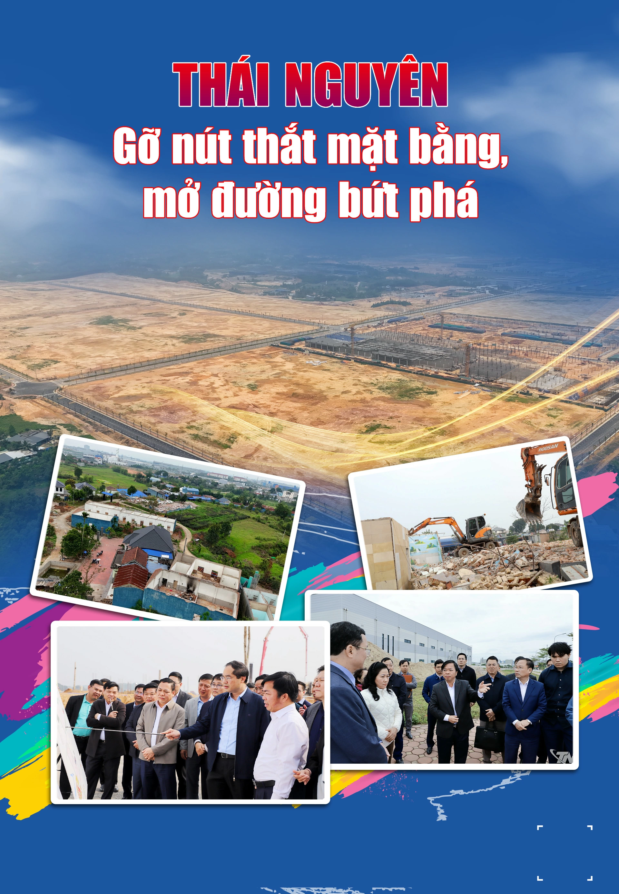
Trong một chiến dịch giải phóng mặt bằng quy mô lớn như tại Thái Nguyên, nguồn lực không chỉ nằm ở vốn hay cơ chế. Có một yếu tố không thể đo đếm bằng tiền, nhưng mang tính quyết định: sự đồng thuận của người dân.
Thái Nguyên: Gỡ nút thắt mặt bằng, mở đường bứt phá - kỳ 1Khi người dân hiểu, tin và đồng hành, từng mét đất được bàn giao không chỉ đúng tiến độ mà còn mở ra sự ổn định lâu dài. Vì vậy, xây dựng niềm tin, bảo đảm công bằng, minh bạch và hài hòa lợi ích chính là chìa khóa để chiến dịch giải phóng mặt bằng (GPMB) đi đến thành công bền vững.
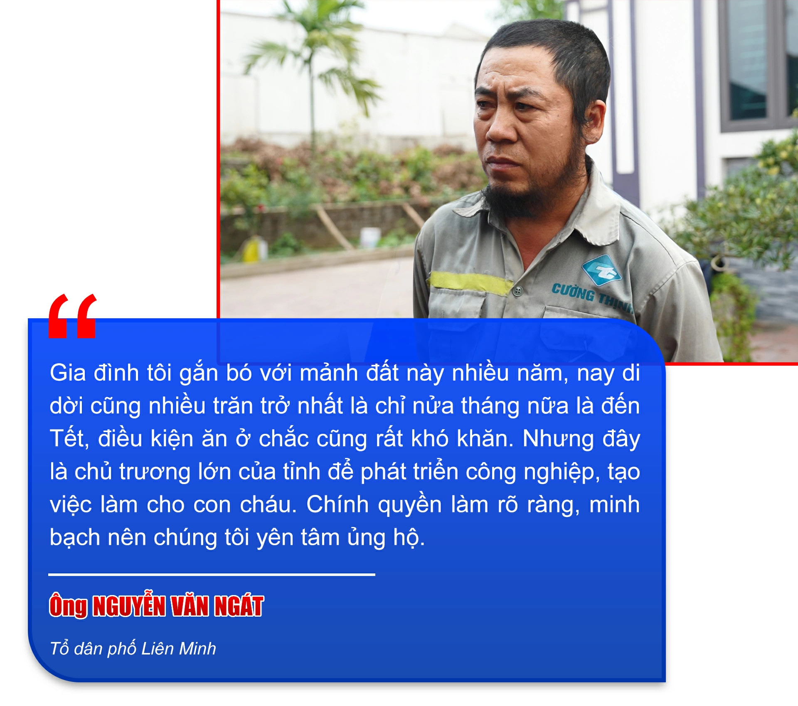
Ở các địa phương như: Điềm Thụy, Phú Bình, Phổ Yên hay Bách Quang... những nơi đang gánh khối lượng giải phóng mặt bằng lớn nhất tỉnh, sự đồng thuận không hiện lên qua những khẩu hiệu, mà được cảm nhận rõ ràng trong từng hành động cụ thể của người dân.
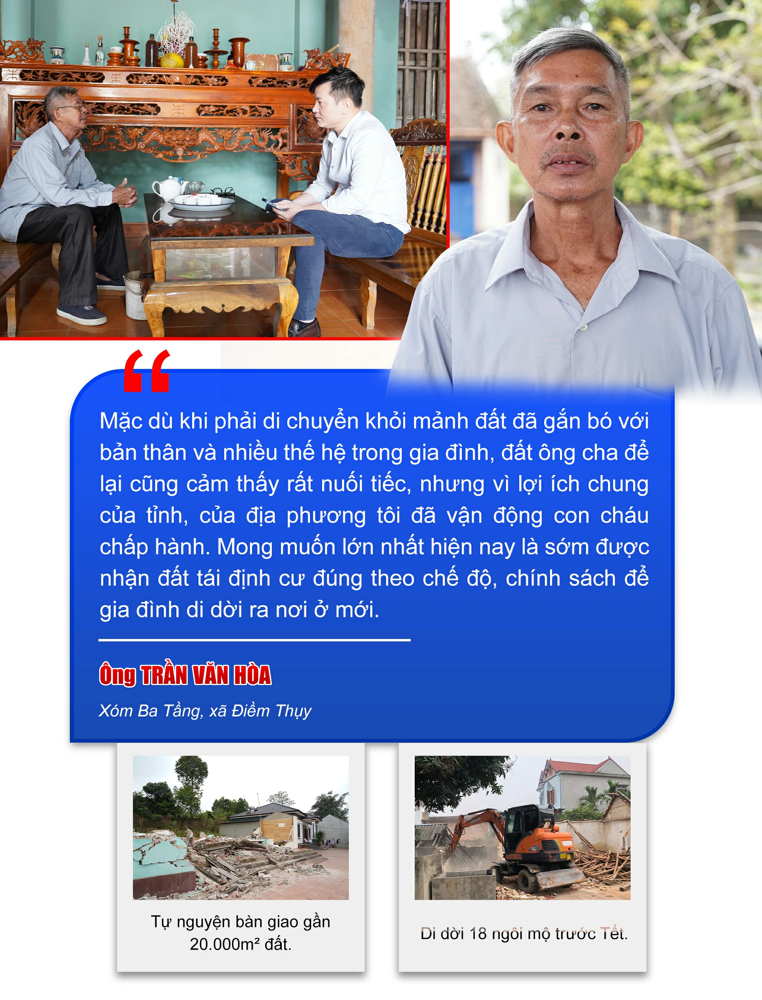
Gia đình ông Trần Văn Hòa, 69 tuổi, ở xóm Ba Tầng, là một trong những hộ có diện tích được thu hồi lớn nhất. Mảnh đất ấy không chỉ là tài sản, mà còn là ký ức, là cội nguồn của nhiều thế hệ.
Sau khi được cán bộ các tổ công tác của xã giải thích về chủ trương, chính sách GPMB, ông Hòa đã đứng ra vận động em gái và các con trong gia đình tự nguyện tháo dỡ nhà cửa, công trình để bàn giao mặt bằng.
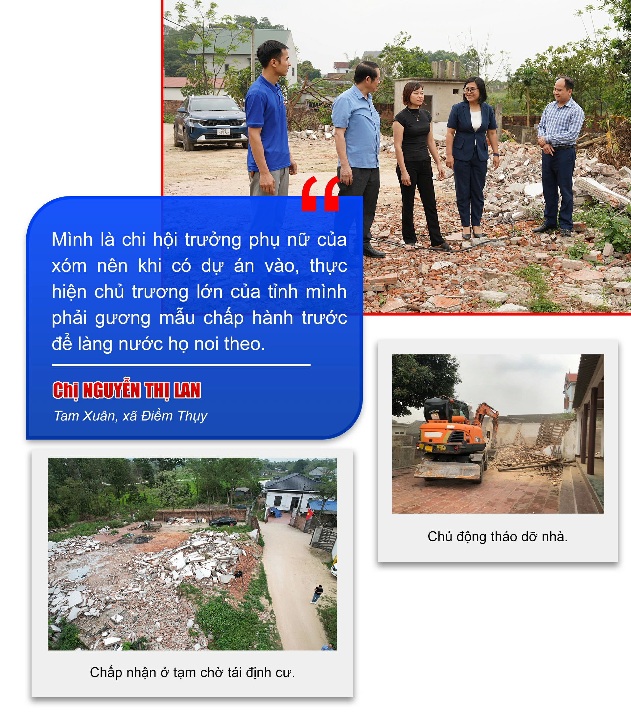
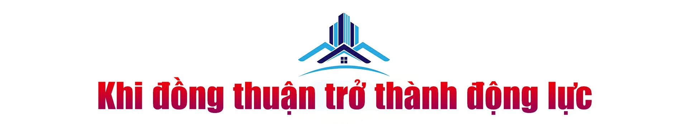
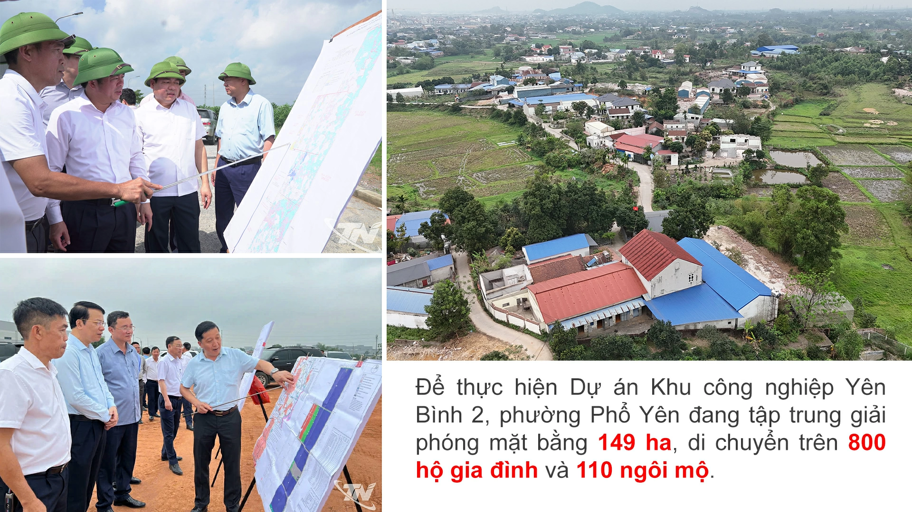
Không chỉ tại Điềm Thụy, ở Phổ Yên, nơi cũng đang triển khai dự án KCN Yên Bình 2 với diện tích 149ha, bức tranh giải phóng mặt bằng cũng mang đầy đủ áp lực và trách nhiệm.
Gần 800 hộ dân bị ảnh hưởng, 110 ngôi mộ phải di dời. Đằng sau mỗi cọc mốc được cắm xuống là một hộ dân phải thay đổi chỗ ở, đằng sau mỗi biên bản kiểm đếm là những câu chuyện gắn bó của nhiều thế hệ.
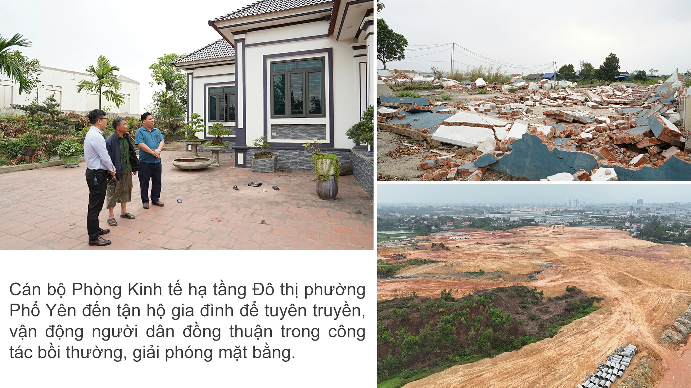
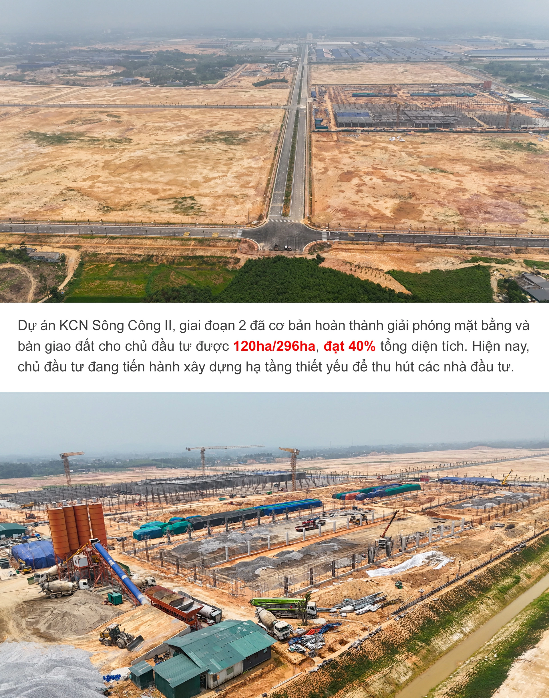
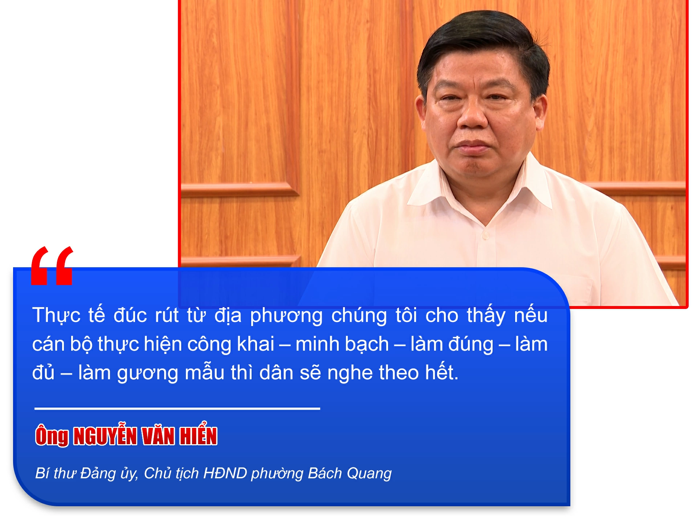
Tại phường Bách Quang, tâm điểm của Dự án KCN Sông Công II - giai đoạn 2, tiến độ bồi thường GPMB cũng đang được đẩy nhanh. Chính quyền địa phương xác định đối thoại, minh bạch và lắng nghe là cách tháo gỡ vướng mắc ngay từ cơ sở.
Hình ảnh cán bộ bám địa bàn, hỗ trợ người dân tháo dỡ, di chuyển tài sản đã góp phần làm cho những người ban đầu còn băn khoăn dần thay đổi, ủng hộ và cùng thực hiện.
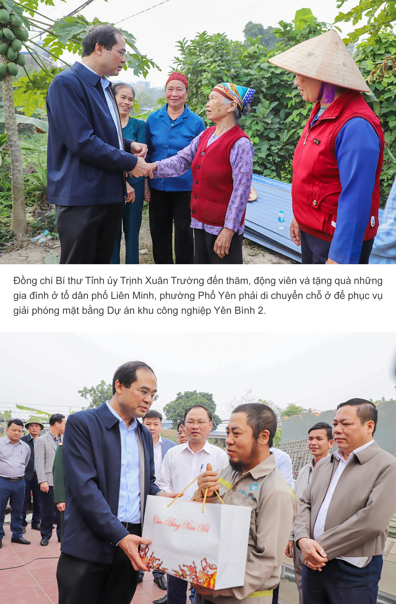
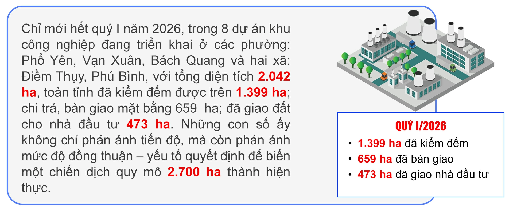
Từng viên gạch trên mỗi bức tường được tháo xuống là từng rào cản trong suy nghĩ được gỡ bỏ vì sự phát triển chung. Giải phóng mặt bằng vì thế không chỉ là câu chuyện của kinh phí hàng nghìn tỷ đồng. Đó trước hết là câu chuyện của niềm tin.
Khi người dân tin vào sự công bằng của chính sách, tin vào trách nhiệm của chính quyền và nhìn thấy lợi ích lâu dài, họ sẵn sàng đồng hành.
Khi lòng dân đã thuận, mọi con đường, dù khó đến đâu, cũng có thể mở ra...
(Còn nữa)